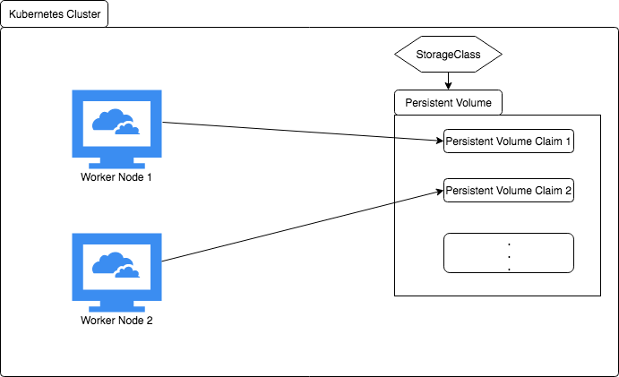
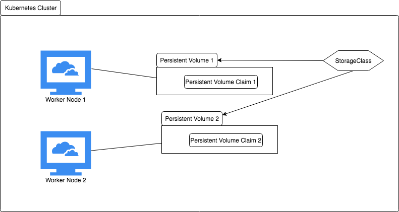

Volumes
- Storage on worker node on which pod is running
- Lifetime, same as that of pod
Common Volume Types
- awsElasticBlockStore
- ConfigMap
- emptyDir
- local
- hostPath
- nfs
- secret
- persistentVolumeClaim
- projected
- portworxVolume
- csi
Persistent Volumes & Persistent Volume Claim

StorageClass
apiVersion: storage.k8s.io/v1
kind: StorageClass
metadata:
name: gp2
parameters:
fsType: ext4
type: gp2
provisioner: kubernetes.io/aws-ebs
reclaimPolicy: Delete
volumeBindingMode: Immediate
PersistentVolume
apiVersion: v1
kind: PersistentVolume
metadata:
name: pv-1
spec:
awsElasticBlockStore:
fsType: ext4
volumeID: aws://us-west-2a/vol-0996e4a8ae4655b04
accessModes:
- ReadWriteOnce
capacity:
storage: 1Gi
storageClassName: gp2
PersistentVolumeClaim
apiVersion: v1
kind: PersistentVolumeClaim
metadata:
name: myclaim2
spec:
accessModes:
- ReadWriteOnce
volumeMode: Filesystem
resources:
requests:
storage: 1Gi
storageClassName: gp2
volumeName: pv-1
Persistent Volumes & Dynamic Provisioning
